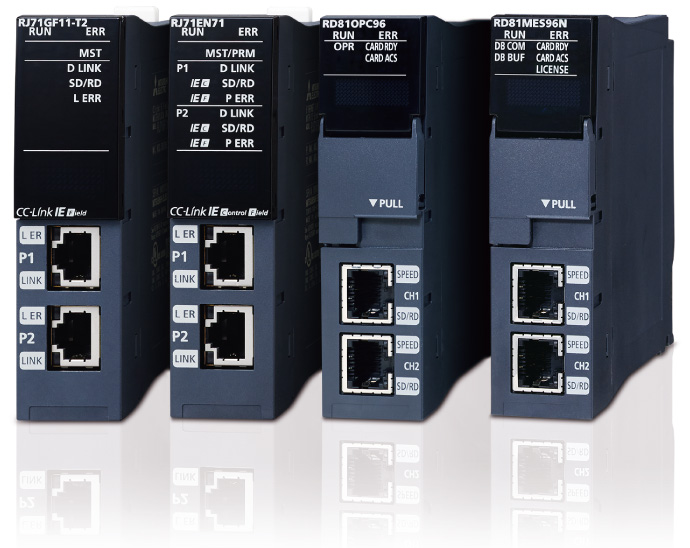
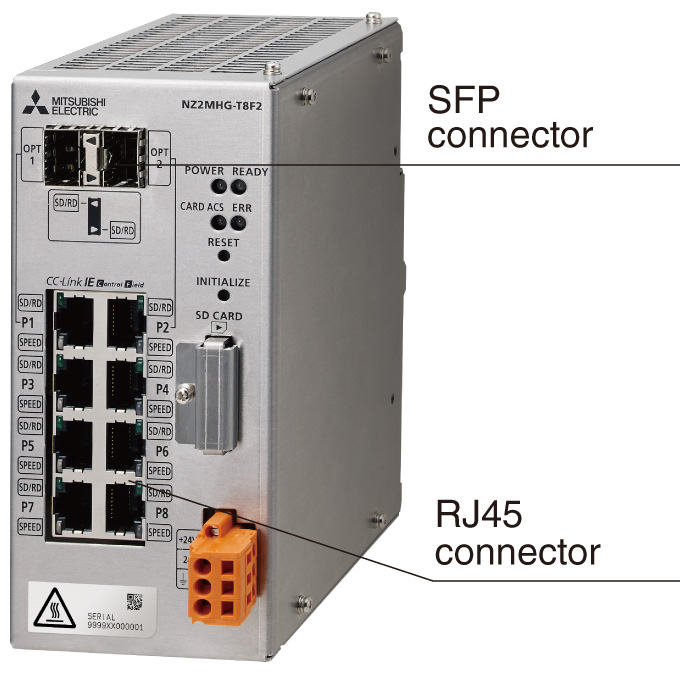
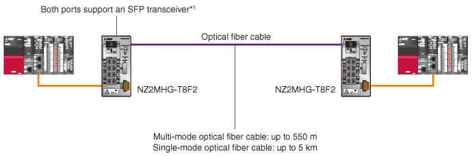

Process Control/Redundant Supported products

Network module
The open industrial network CC-Link IE enables system construction using the MELSEC iQ-R Series modules. An Ethernet-based network allows the use of widely available cables and connectors. It supports star, line, and ring topologies to build flexible systems. In the redundant system, a highly reliable network with reduced single point failure using redundant CC-Link IE Field Network and redundant remote head module can be configured.

Related products
Managed CC-Link IE switch NZ2MHG-T8F2
- Connectable to CC-Link IE and Ethernet devices simultaneously
- ERP- and LA- style redundant topologies between switches continue communication at network failure including cable disconnection, by switching network paths
- With an SFP transceiver*1, long-distance optical fiber cable, which is ideal for systems requiring facility-to-facility landline communication, is available
- Supports VLAN and can manage multiple networks by one switch

SFP for long-distance communication
With its long-distance data transmission feature, optical fiber cables are ideal for facility-to-facility long-distance communications

- *1.Either the optical port (OPT1/OPT2) or RJ45 port (P1/P2) can be used at a time.
Network/advanced information modules and compatible process CPUs/remote head modules
M … Main baseE … Extension base
| Product name | Model | Process CPU | SIL2 process CPU |
CC-Link IE Field Network remote head module |
||||
|---|---|---|---|---|---|---|---|---|
| Process mode |
Redundant mode |
- | General | Redundant | ||||
| ME | M | E | M | ME | ||||
| Network module | ||||||||
| CC-Link IE Controller Network | RJ71GP21-SX, RJ71GP21S-SX | ● | ● | - | ● | - | - | |
| RJ71EN71 | - | - | - | - | - | - | ||
| CC-Link IE Field Network | RJ71GF11-T2 | ● | ● | - | ● | - | - | |
| RJ71EN71 | ● | - | - | - | - | - | ||
| CC-Link | RJ61BT11 | ● | ● | ● | ● | ● | ● | |
| AnyWireASLINK | RJ51AW12AL | ● | - | - | - | ● | - | |
| MELSECNET/H | RJ71LP21-25 | ● | ● | - | - | - | - | |
| RJ71BR11 | - | - | - | - | - | - | ||
| Ethernet | RJ71EN71 | ● | ● | ● | ● | ● | ● | |
| MODBUS®/TCP | Master station | RJ71EN71 | ● | ● | ●*2 | ● | ●*2 | ●*2 |
| Slave station | RJ71EN71 | ● | ● | ● | ● | ● | ● | |
| MODBUS® RTU | Master station | RJ71C24, RJ71C24-R2, RJ71C24-R4 | ●*3 | ●*3 | ●*3 | - | ●*3 | ●*3 |
| Slave station | RJ71C24, RJ71C24-R2, RJ71C24-R4 | ● | ● | ● | - | ● | - | |
| PROFIBUS®-DP | Master station | RJ71PB91V | ● | ● | - | ● | ● | ● |
| Slave station | RJ71PB91V | ● | - | ● | - | ● | ● | |
| CANopen® | RJ71CN91 | ● | - | - | - | - | - | |
| EtherNet/IP™ | RJ71EIP91 | ● | - | - | - | - | - | |
| DeviceNet® | RJ71DN91 | ● | - | ● | - | - | - | |
| FL-net | ER-1FL2-T*4 | ● | - | ● | - | ● | ● | |
| BACnet® | RJ71BAC96 | ● | - | ● | - | ● | - | |
| GP-IB interface | RJ71GB91 | ● | - | - | - | - | - | |
| Serial communication | RJ71C24, RJ71C24-R2, RJ71C24-R4 | ● | ● | ● | - | ● | ● | |
| Advanced information module | ||||||||
| MES interface | RD81MES96N | ● | - | - | - | - | - | |
| OPC UA server | RD81OPC96 | ● | ● | - | - | - | - | |
| High-speed data logger | RD81DL96 | ● | - | ● | - | - | - | |
| High-speed data communication | RD81DC96 | ● | - | - | - | - | - | |
| C intelligent function | RD55UP06-V | ● | ● | - | - | - | - | |
| RD55UP12-V | ● | ● | - | - | - | - | ||
- *2.Supported with the simple CPU communication function.
- *3.Supported with predefined protocol support function.
- *4.Mitsubishi Electric Engineering product